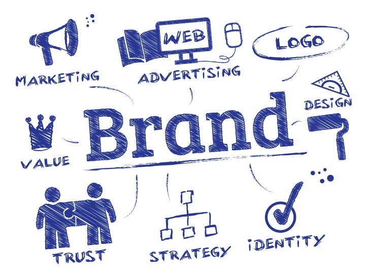
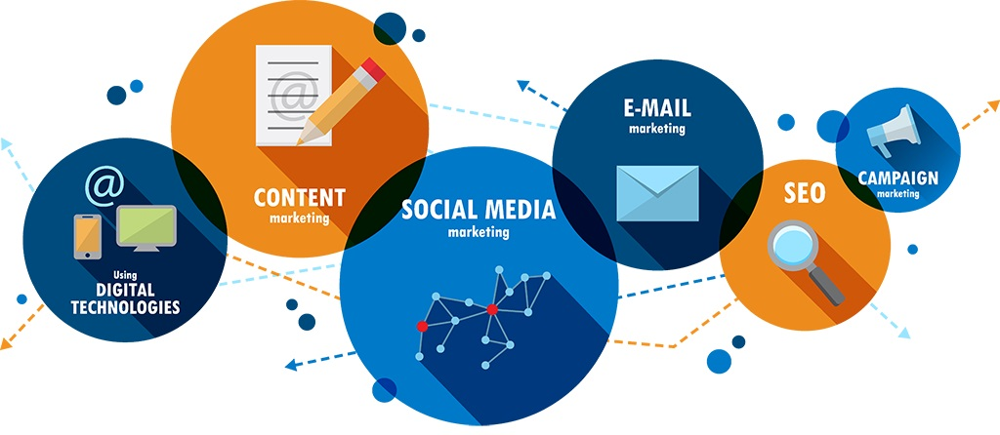
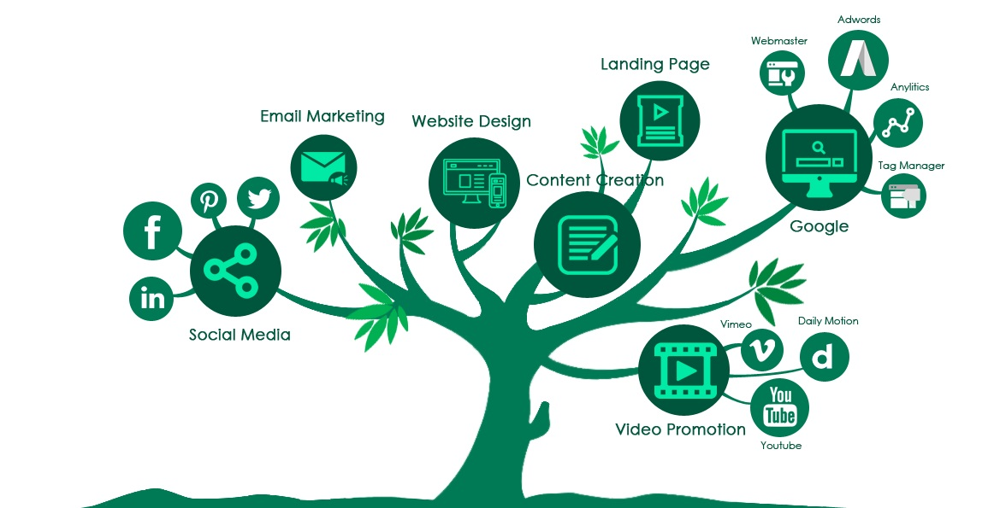
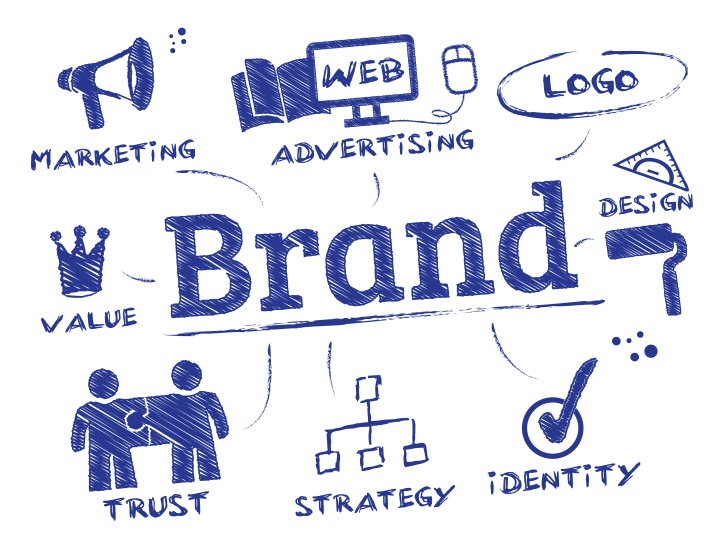
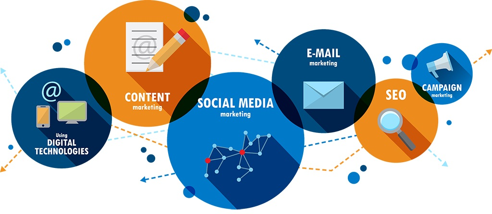
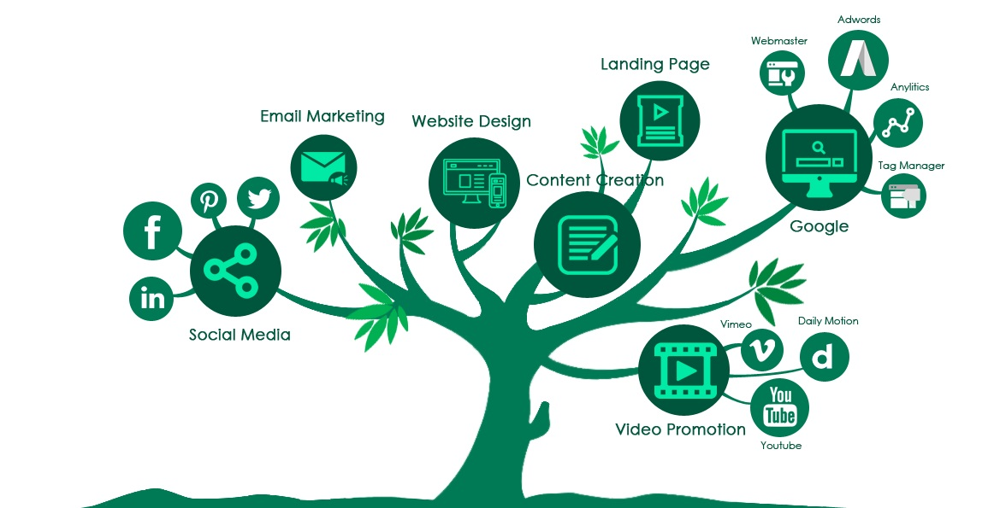
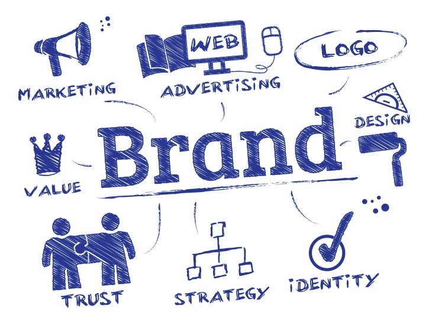
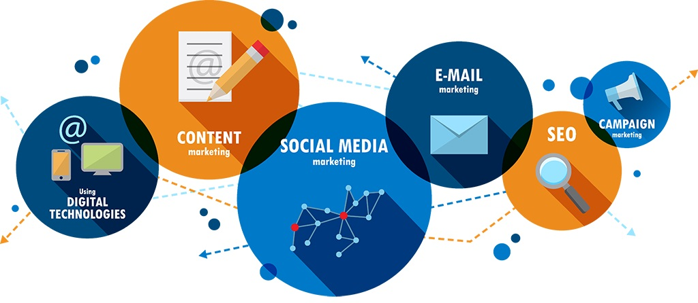
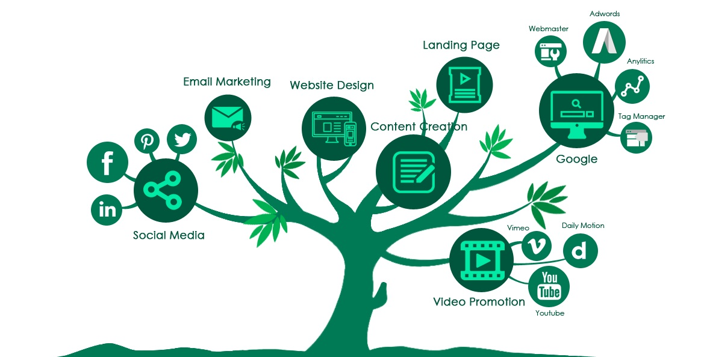
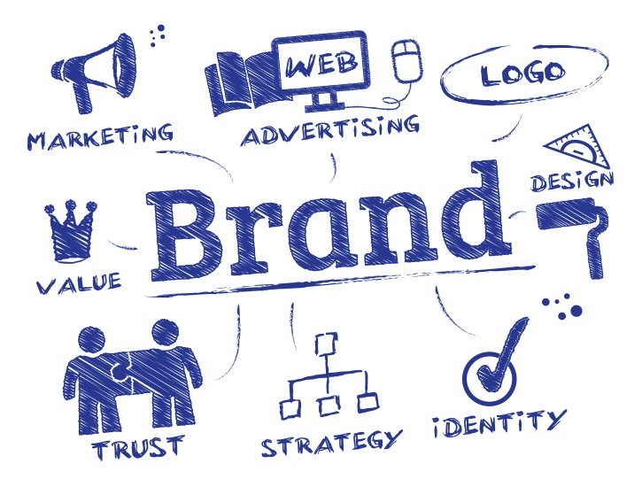
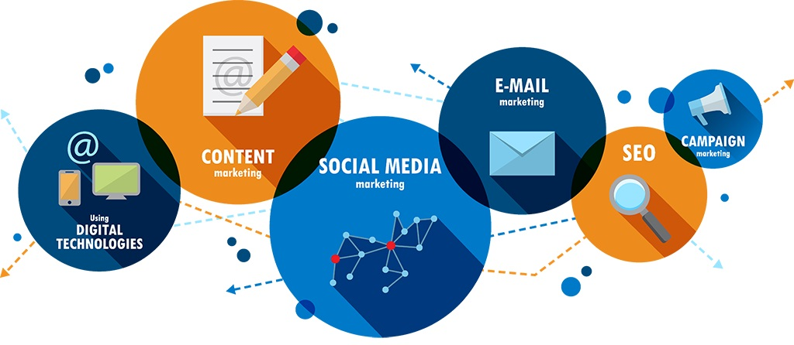
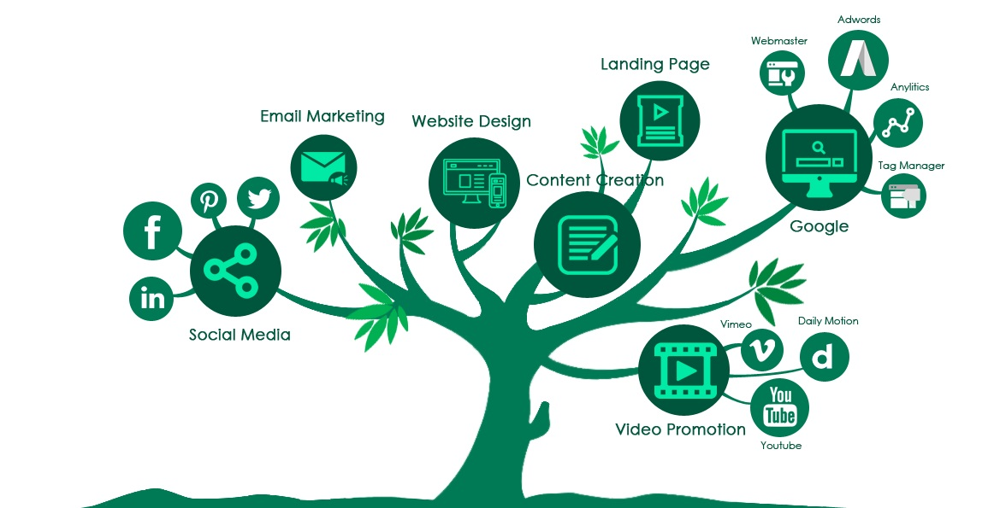
Unlike any advertising agency, The Mark-Win Company is a brand-marketing firm whose approach is more like that of a fully-integrated marketing department. This means not only creating and developing marketing messages to be distributed among all selected media and managing those messages, but also making sure that the messages and promises can be delivered. This means working with management and staff to ensure every detail of “the experience” a client or customer may have meets and delivers on any promises made via the creative process. It also means being an integral part of the ongoing process, successes and failures, in building and developing a brand that will stand up and last no matter the shifts in the economy or other issues the client may face. From this standpoint, one could view our approach as more as a business consultant with a solution based, brand-marketing emphasis. We provide branding from the inside-out, so when it comes to creating a logo or other elements, we've got you covered.
Our deep understanding of brand definition, creative development and digital marketing combined with our strategic, data-driven approach to decision making helps our clients to deepen audience relationships and guide customers towards conversion. And, while we're more than just a series of services, here are a few ways that we can help.
Being an offshore software development company, Spectraforce typically works in conjunction with client teams to establish the major activities and milestones that will determine project success. The major steps are as follows: